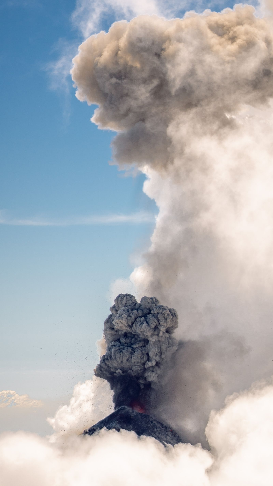

Engagement 01 — The map that got smaller
A hazard-map revision where the honest change was to shrink an over-drawn zone — and where shrinking it had to be argued harder than growing the other one.
- Client
- Island geological survey
- Volcano
- Stratovolcano, anonymised
- Years
- 2023–2025
- Fieldwork
- 3 seasons · 61 deposit sites
- Status
- Map adopted, 2025
The brief
The survey's hazard map dated from 1998. It marked a broad northern sector — two villages, a school, the island's fuel depot — as high-hazard for pyroclastic density currents, on the strength of one deposit described in a 1970s thesis. The survey asked for a full revision: confirm the lines or move them, but show the working either way.
What was decided
Three seasons of deposit mapping at 61 sites, with flow modelling run only after the field evidence was in — models second, rocks first. The northern deposits turned out to be lahar and debris-avalanche material, not flow deposits: every dated flow deposit stopped at the same ridge line. The northern high-hazard zone was redrawn along that ridge. In exchange, one southern drainage the old map called moderate was raised: it had carried lahars twice in forty years, and a hamlet had grown along it.
What came of it
The revised map was adopted in 2025. The two northern villages moved out of the high-hazard zone — with the evidence published, so the decision can be re-argued by anyone. The southern hamlet moved in, and got a lahar early-warning gauge and an evacuation path in the same budget round. The survey's testimonial for this engagement is on the Record page.
